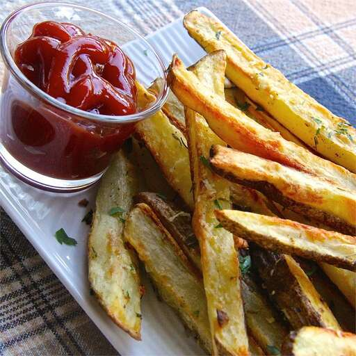

Fries Recipes.

Oven-Baked Garlic Fries Description.
This recipe takes a duration of one hour; twenty minutes for preparation and forty for cooking. As per serving, one gains 481 calories, 18g of fat, 69g of Carbohydrates and 14g of proteins.
Ingredients.
- 4 large unpeeled russet potatoes, cut into 1/4- inch strips.
- 1/4 ucp olive oil.
- 3 cloves garlic, minced.
- 1/2 teaspoon seasoned salt, divided.
- 1.2 teaspoon ground dried thyme.
- 3/4 cup grated Parmesan cheese, divided.
- 1/4 cup chopped fresch parsley.
Steps
- Preheat the oven to 425 degrees F (220 degrees C).
- Place potatoes in a large bowl and drizzle with olive oil. Season with garlic, thyme, and 1/4 teaspoon seasoned salt;
toss until are evenly coated. Lift fries out of the bowl and spread evenly onto a nonstick baking sheet. Save remaining
oil in the bowl.
- Bake in the preheated oven for 30 minutes, flipping fries halfway. Return fries to the bowl with olive oil.
Sprinkle with 1/2 cup Parmesan cheese and parsley; toss to coat. Spread again onto the baking sheet.
- Continue baking until cheese melts, about 10 minutes . Sprinkle with remaining 1/4 cup Parmesan cheese and 1/4 teaspoon seasoned salt to serve.
Return to main page.